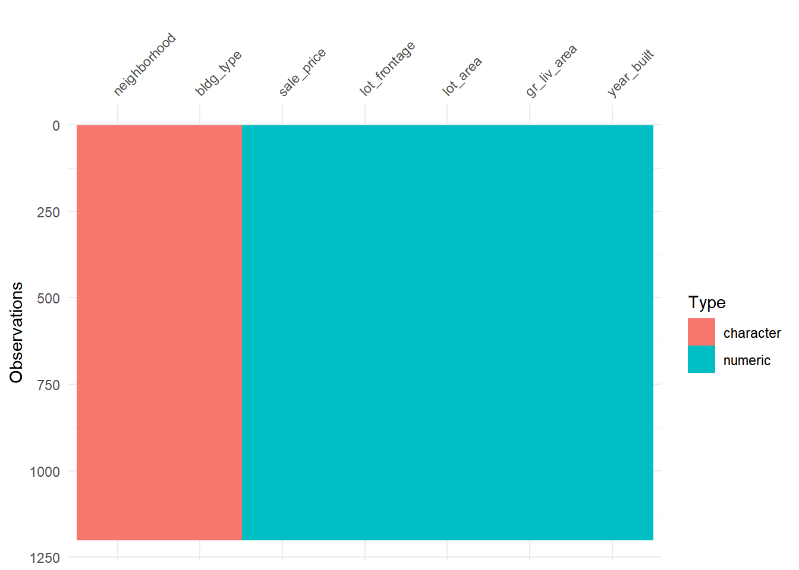
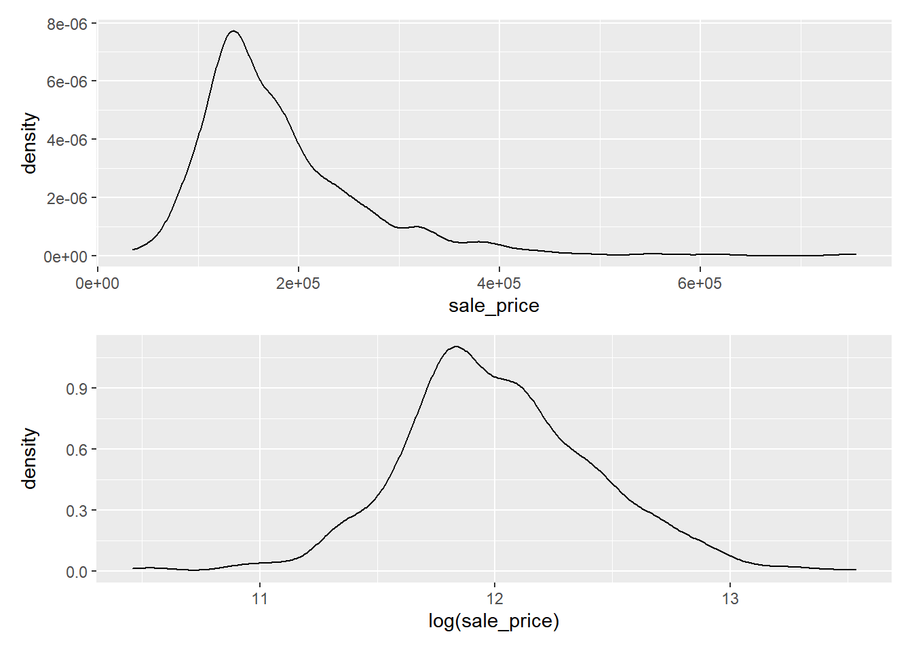
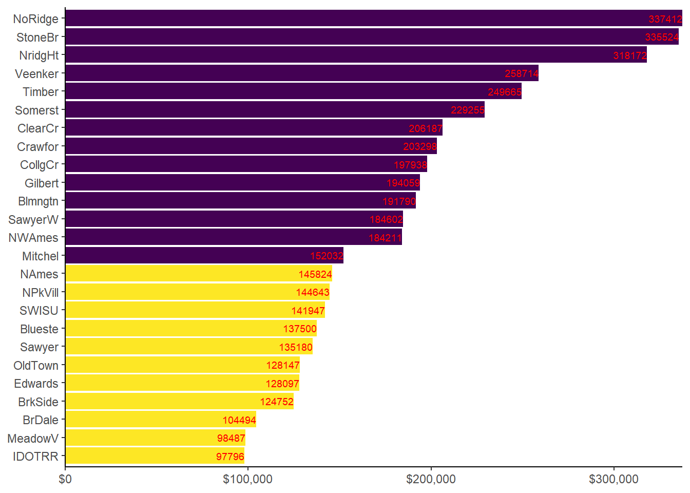
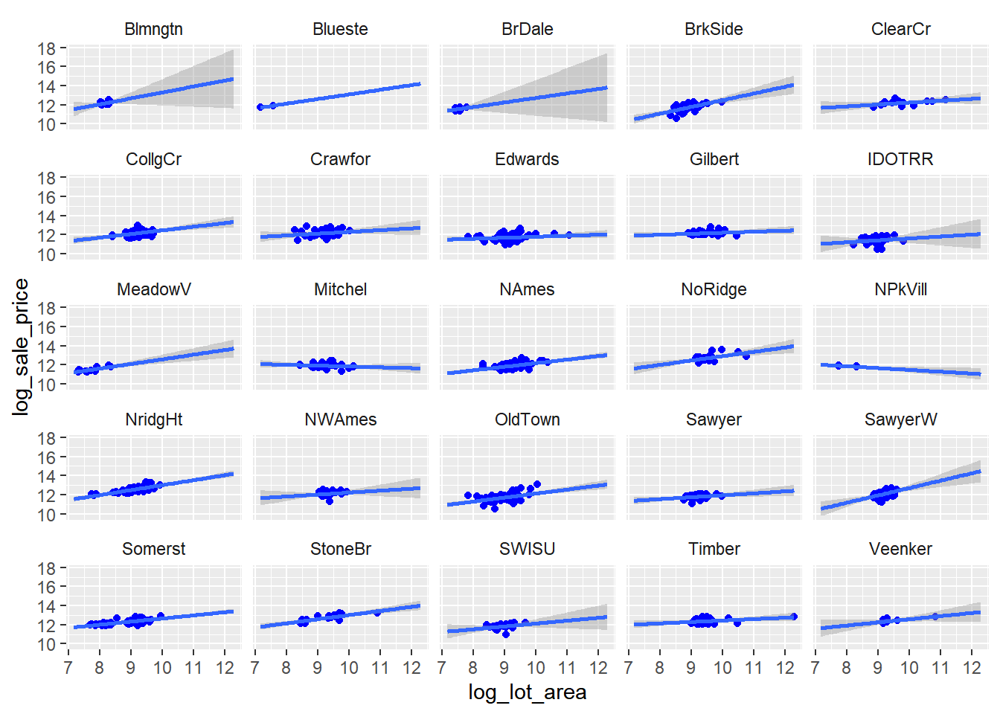
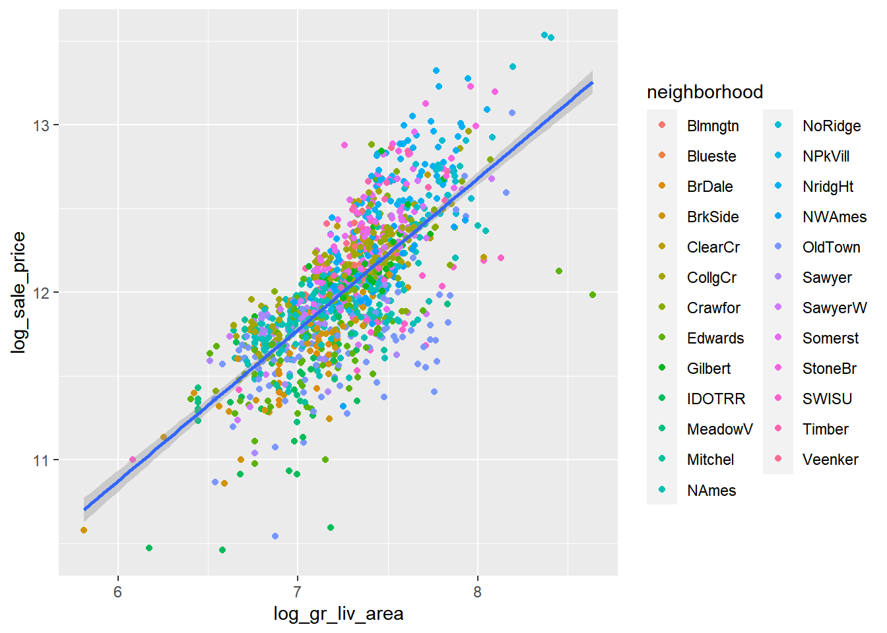
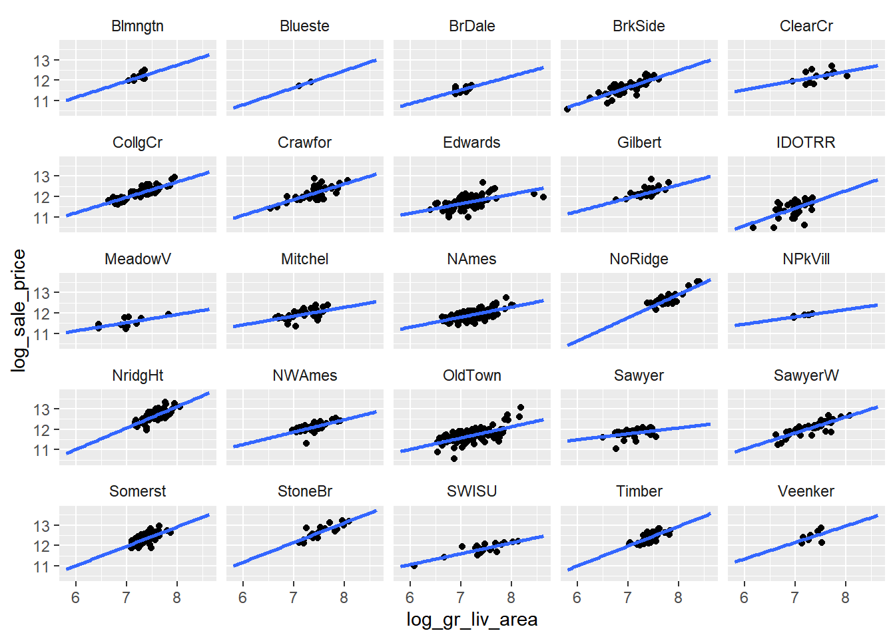
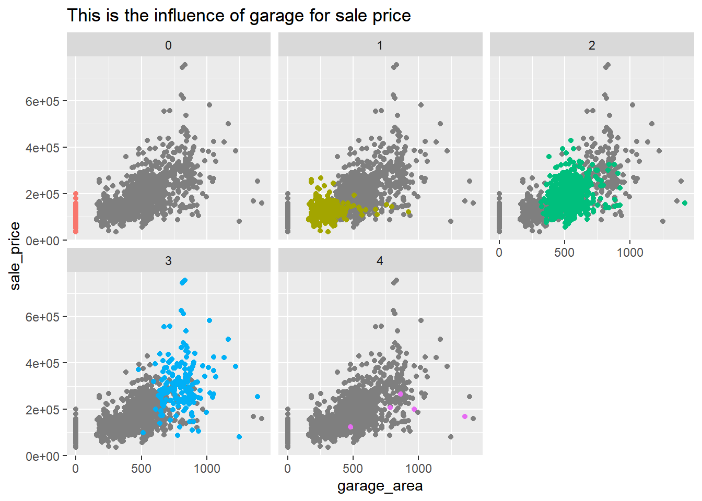

第 42 章 探索性数据分析-ames房价预测
这是一份Ames房屋数据，我们可以简单的将其想象为由房屋中介推出的北京市各个区的房屋信息。
ames <- read_csv("./datas/ames_houseprice.csv") %>%
janitor::clean_names()## Warning in FUN(X[[i]], ...): strings not representable in native
## encoding will be translated to UTF-8## Warning in FUN(X[[i]], ...): unable to translate '<U+00C4>' to native
## encoding## Warning in FUN(X[[i]], ...): unable to translate '<U+00D6>' to native
## encoding## Warning in FUN(X[[i]], ...): unable to translate '<U+00E4>' to native
## encoding## Warning in FUN(X[[i]], ...): unable to translate '<U+00F6>' to native
## encoding## Warning in FUN(X[[i]], ...): unable to translate '<U+00DF>' to native
## encoding## Warning in FUN(X[[i]], ...): unable to translate '<U+00C6>' to native
## encoding## Warning in FUN(X[[i]], ...): unable to translate '<U+00E6>' to native
## encoding## Warning in FUN(X[[i]], ...): unable to translate '<U+00D8>' to native
## encoding## Warning in FUN(X[[i]], ...): unable to translate '<U+00F8>' to native
## encoding## Warning in FUN(X[[i]], ...): unable to translate '<U+00C5>' to native
## encoding## Warning in FUN(X[[i]], ...): unable to translate '<U+00E5>' to native
## encoding# 各变量数据解释
explanation <- readxl::read_excel("./datas/ames_houseprice_explanation.xlsx")
explanation## # A tibble: 79 x 3
## 列名 description 解释
## <chr> <chr> <chr>
## 1 MSSubClass Identifies the type of dwelling involved in the~ 住宅~
## 2 MSZoning Identifies the general zoning classification of~ 建筑~
## 3 LotFrontage Linear feet of street connected to property 建筑~
## 4 LotArea Lot size in square feet 占地~
## 5 Street Type of road access to property 建筑~
## 6 Alley Type of alley access to property 建筑~
## 7 LotShape General shape of property 建筑~
## 8 LandContour Flatness of the property 地面~
## 9 Utilities Type of utilities available 可用~
## 10 LotConfig Lot configuration 房屋~
## # ... with 69 more rows42.1 探索设想
读懂数据描述，如
- 房屋设施 (bedrooms, garage, fireplace, pool, porch, etc.)
- 地理位置 (neighborhood)
- 土地信息 (zoning, shape, size, etc.)
- 品相等级
- 出售价格
探索影响房屋价格的因素：
- 必要的预处理（缺失值处理、标准化、对数化等等）
- 必要的可视化（比如价格分布图等）
- 必要的统计（比如各地区房屋价格的均值）
- 合理选取若干预测变量，建立多元线性模型，并对模型结果给出解释
- 房屋价格与预测变量（房屋大小、在城市的位置、房屋类型、与街道的距离）
42.2 变量选取
我们选取下列变量：
- lot_frontage, 建筑离街道的距离
- lot_area, 占地面积
- neighborhood, 建筑在城市的位置
- gr_liv_area, 地上居住面积
- bldg_type, 住宅类别(联排别墅、独栋别墅…)
- year_built 房屋修建日期
df <- ames %>%
select(
sale_price,
lot_frontage,
lot_area,
neighborhood,
gr_liv_area,
bldg_type,
year_built
)
df## # A tibble: 1,460 x 7
## sale_price lot_frontage lot_area neighborhood gr_liv_area
## <dbl> <dbl> <dbl> <chr> <dbl>
## 1 208500 65 8450 CollgCr 1710
## 2 181500 80 9600 Veenker 1262
## 3 223500 68 11250 CollgCr 1786
## 4 140000 60 9550 Crawfor 1717
## 5 250000 84 14260 NoRidge 2198
## 6 143000 85 14115 Mitchel 1362
## 7 307000 75 10084 Somerst 1694
## 8 200000 NA 10382 NWAmes 2090
## 9 129900 51 6120 OldTown 1774
## 10 118000 50 7420 BrkSide 1077
## # ... with 1,450 more rows, and 2 more variables: bldg_type <chr>,
## # year_built <dbl>42.3 缺失值处理
df %>%
summarise(
across(everything(), ~ sum(is.na(.x)))
) %>%
pivot_longer(
cols = everything(),
names_to = "subject",
values_to = "NAs"
)## # A tibble: 7 x 2
## subject NAs
## <chr> <int>
## 1 sale_price 0
## 2 lot_frontage 259
## 3 lot_area 0
## 4 neighborhood 0
## 5 gr_liv_area 0
## 6 bldg_type 0
## 7 year_built 0可以发现，所有的缺失值均在lot_fontage（建筑距离街道的距离）这个变量中，此变量对于房价有一定影响，所以还是保留。
df <- df %>%
drop_na()
df %>%
visdat::vis_dat() # 可视化数据分布情况## Warning: `gather_()` was deprecated in tidyr 1.2.0.
## Please use `gather()` instead.
## This warning is displayed once every 8 hours.
## Call `lifecycle::last_lifecycle_warnings()` to see where this warning was generated.
42.4 数据预处理
42.4.1 标准化vs对数化
- 标准化
standard <- function(x){
(x - mean(x)) / sd(x)
}
# 标准化所有数字类型的变量
# 将字符型的变量变为因子类型
df %>%
mutate(
across(where(is.numeric), standard),
across(where(is.character), as.factor)
)## # A tibble: 1,201 x 7
## sale_price lot_frontage lot_area neighborhood gr_liv_area
## <dbl> <dbl> <dbl> <fct> <dbl>
## 1 0.333 -0.208 -0.190 CollgCr 0.375
## 2 0.00875 0.410 -0.0444 Veenker -0.470
## 3 0.512 -0.0844 0.164 CollgCr 0.519
## 4 -0.489 -0.414 -0.0507 Crawfor 0.388
## 5 0.830 0.574 0.544 NoRidge 1.30
## 6 -0.453 0.616 0.525 Mitchel -0.281
## 7 1.51 0.204 0.0167 Somerst 0.345
## 8 -0.610 -0.784 -0.484 OldTown 0.496
## 9 -0.753 -0.826 -0.319 BrkSide -0.819
## 10 -0.615 -0.00206 0.158 Sawyer -0.889
## # ... with 1,191 more rows, and 2 more variables: bldg_type <fct>,
## # year_built <dbl>- 对数化
df %>%
mutate(
across(where(is.numeric), log),
across(where(is.character), as.factor)
)## # A tibble: 1,201 x 7
## sale_price lot_frontage lot_area neighborhood gr_liv_area
## <dbl> <dbl> <dbl> <fct> <dbl>
## 1 12.2 4.17 9.04 CollgCr 7.44
## 2 12.1 4.38 9.17 Veenker 7.14
## 3 12.3 4.22 9.33 CollgCr 7.49
## 4 11.8 4.09 9.16 Crawfor 7.45
## 5 12.4 4.43 9.57 NoRidge 7.70
## 6 11.9 4.44 9.55 Mitchel 7.22
## 7 12.6 4.32 9.22 Somerst 7.43
## 8 11.8 3.93 8.72 OldTown 7.48
## 9 11.7 3.91 8.91 BrkSide 6.98
## 10 11.8 4.25 9.32 Sawyer 6.95
## # ... with 1,191 more rows, and 2 more variables: bldg_type <fct>,
## # year_built <dbl>- 通过图形对比标准化和对数化的结果
p1 <- df %>%
ggplot(aes(x = sale_price)) +
geom_density()
p2 <- df %>%
ggplot(aes(x = log(sale_price))) +
geom_density()
p1/p2
可以看到对数化后的数据分布更趋近于正态分布，故本例中选择对数化。
df <- df %>%
mutate(
across(where(is.numeric),
.fns = list(log = log),
.names = "{.fn}_{.col}"),
across(where(is.character), as.factor)
)
df## # A tibble: 1,201 x 12
## sale_price lot_frontage lot_area neighborhood gr_liv_area
## <dbl> <dbl> <dbl> <fct> <dbl>
## 1 208500 65 8450 CollgCr 1710
## 2 181500 80 9600 Veenker 1262
## 3 223500 68 11250 CollgCr 1786
## 4 140000 60 9550 Crawfor 1717
## 5 250000 84 14260 NoRidge 2198
## 6 143000 85 14115 Mitchel 1362
## 7 307000 75 10084 Somerst 1694
## 8 129900 51 6120 OldTown 1774
## 9 118000 50 7420 BrkSide 1077
## 10 129500 70 11200 Sawyer 1040
## # ... with 1,191 more rows, and 7 more variables: bldg_type <fct>,
## # year_built <dbl>, log_sale_price <dbl>, log_lot_frontage <dbl>,
## # log_lot_area <dbl>, log_gr_liv_area <dbl>, log_year_built <dbl>42.5 正式开始探索
42.5.1 各地区房屋价格均值
df %>%
group_by(neighborhood) %>%
summarise(
mean_sale = mean(sale_price)
) %>%
ggplot(aes(x = mean_sale,
y = fct_reorder(neighborhood, mean_sale))) + # 通过mean_sale对neighborhood进行排序
geom_col(aes(fill = mean_sale < 150000),
show.legend = FALSE) +
geom_text(aes(label = round(mean_sale, 0)),
hjust = 1, size = 2.5, color = "red") +
# scale_x_continuous(
# expand = c(0, 0),
# breaks = c(0, 100000, 200000, 300000),
# labels = c(0, "1w", "2w", "3w"),
# ) +
scale_x_continuous(
expand = c(0, 0),
labels = scales::dollar # 设定单位
) +
scale_fill_viridis_d(option = "D") + # 设定柱体颜色
theme_classic() +
labs(x = NULL, y = NULL)
42.5.2 房屋价格与占地面积
df %>%
ggplot(aes(x = log_lot_area, y = log_sale_price)) +
geom_point(color = "blue") +
geom_smooth(method = "lm", formula = "y ~ x", fullrange = TRUE) +
facet_wrap(~neighborhood) +
theme(strip.background = element_blank())## Warning in qt((1 - level)/2, df): 产生了NaNs## Warning in max(ids, na.rm = TRUE): max里所有的参数都不存在；回覆-Inf
42.5.3 房屋价格与房屋居住面积
ggplot(df, aes(log_gr_liv_area, y = log_sale_price)) +
geom_point(aes(color = neighborhood)) +
geom_smooth(method = lm, formula = "y~x")
房屋的价格随着居住面积的增加，呈现逐渐升高的趋势。
ggplot(df, aes(x = log_gr_liv_area, y = log_sale_price)) +
geom_point() +
geom_smooth(method = lm, se = FALSE, formula = "y ~ x", fullrange = TRUE) +
facet_wrap(~ neighborhood) +
theme(strip.background = element_blank())
42.5.4 车库与房屋价格
车库大小和容量是否对销售价格有影响？
ames %>%
ggplot(aes(x = garage_area, y = sale_price)) +
# 画出背景，以灰色散点图表示
geom_point(
data = select(ames, -garage_cars),
color = "gray50"
) +
# 以不同颜色显示车库容车的数量
geom_point(aes(color = as.factor(garage_cars))) +
facet_wrap(vars(garage_cars)) +
theme(legend.position = "none") +
ggtitle("This is the influence of garage for sale price")
42.6 建模
lm(log_sale_price ~ 1 + log_gr_liv_area + neighborhood, data = df) %>%
broom::tidy()## # A tibble: 26 x 5
## term estimate std.error statistic p.value
## <chr> <dbl> <dbl> <dbl> <dbl>
## 1 (Intercept) 7.53 0.154 48.7 2.21e-284
## 2 log_gr_liv_area 0.638 0.0200 31.9 3.76e-161
## 3 neighborhoodBlueste -0.314 0.149 -2.10 3.55e- 2
## 4 neighborhoodBrDale -0.466 0.0724 -6.43 1.80e- 10
## 5 neighborhoodBrkSide -0.336 0.0597 -5.62 2.44e- 8
## 6 neighborhoodClearCr -0.103 0.0762 -1.35 1.76e- 1
## 7 neighborhoodCollgCr 0.00332 0.0556 0.0597 9.52e- 1
## 8 neighborhoodCrawfor -0.0870 0.0612 -1.42 1.55e- 1
## 9 neighborhoodEdwards -0.365 0.0567 -6.44 1.79e- 10
## 10 neighborhoodGilbert -0.0621 0.0599 -1.04 3.00e- 1
## # ... with 16 more rowslibrary(lme4)
lmer(log_sale_price ~ 1 + log_gr_liv_area + (log_gr_liv_area | neighborhood),
data = df) %>%
broom.mixed::tidy()## # A tibble: 6 x 6
## effect group term estimate std.error statistic
## <chr> <chr> <chr> <dbl> <dbl> <dbl>
## 1 fixed <NA> (Intercept) 6.88 0.334 20.6
## 2 fixed <NA> log_gr_liv_area 0.705 0.0493 14.3
## 3 ran_pars neighborhood sd__(Intercept) 1.34 NA NA
## 4 ran_pars neighborhood cor__(Intercept~ -0.993 NA NA
## 5 ran_pars neighborhood sd__log_gr_liv_~ 0.205 NA NA
## 6 ran_pars Residual sd__Observation 0.191 NA NA